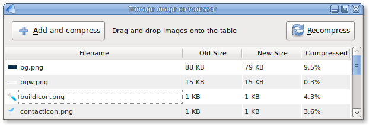

Trimage image compressor
A cross-platform tool for optimizing PNG and JPG files.Trimage is a cross-platform GUI and command-line interface to optimize image files via optipng, advpng and jpegoptim, depending on the filetype (currently, PNG and JPG files are supported). It was inspired by imageoptim. All image files are losslessy compressed on the highest available compression levels. Trimage gives you various input functions to fit your own workflow: A regular file dialog, dragging and dropping and various command line options.
Trimage in action
Download
Ubuntu
sudo add-apt-repository blasudo apt-get install trimage
Other *nix
Download the source via Github, [do something]
Mac
Trimage should be able to run on Mac. Help us with this
Windows
Trimage should be able to run on Windows. Help us with this
Repositories
Git: Trimage is primarily developed on GitHub.
Bzr: Trimage is also available on Launchpad.
Trimage is MIT licenced. We encourage contributions via GitHub.
Thanks
The following people helped develop Trimage:
- Neil Wallace
- Jeroen Goudsmit
Donate
If you enjoy using Trimage, please buy us a coffee or a beer :)

Requirements
- python 2.6
- python-qt4 4.4
- optipng 0.6.2.1
- advancecomp 1.15
- jpegoptim 1.2.2
Command line options
- --version
- show program's version number and exit
- -h, --help
- show this help message and exit
- -v, --verbose
- Verbose mode (default)
- -q, --quiet
- Quiet mode
- -f FILENAME, --file=FILENAME
- compresses image and exit
- -d DIRECTORY, --directory=DIRECTORY
- compresses images in directory and exit
Help
Please use GitHub for reporting bugs and email help@trimage.org for general questions (though we are not a helpdesk!)